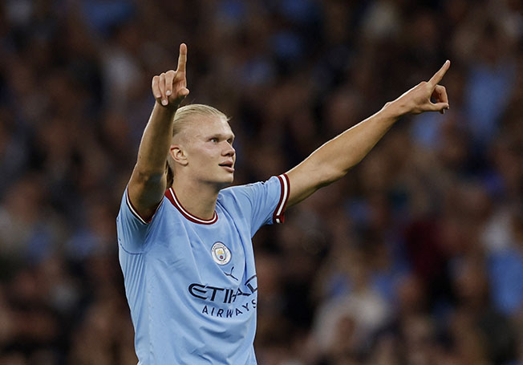
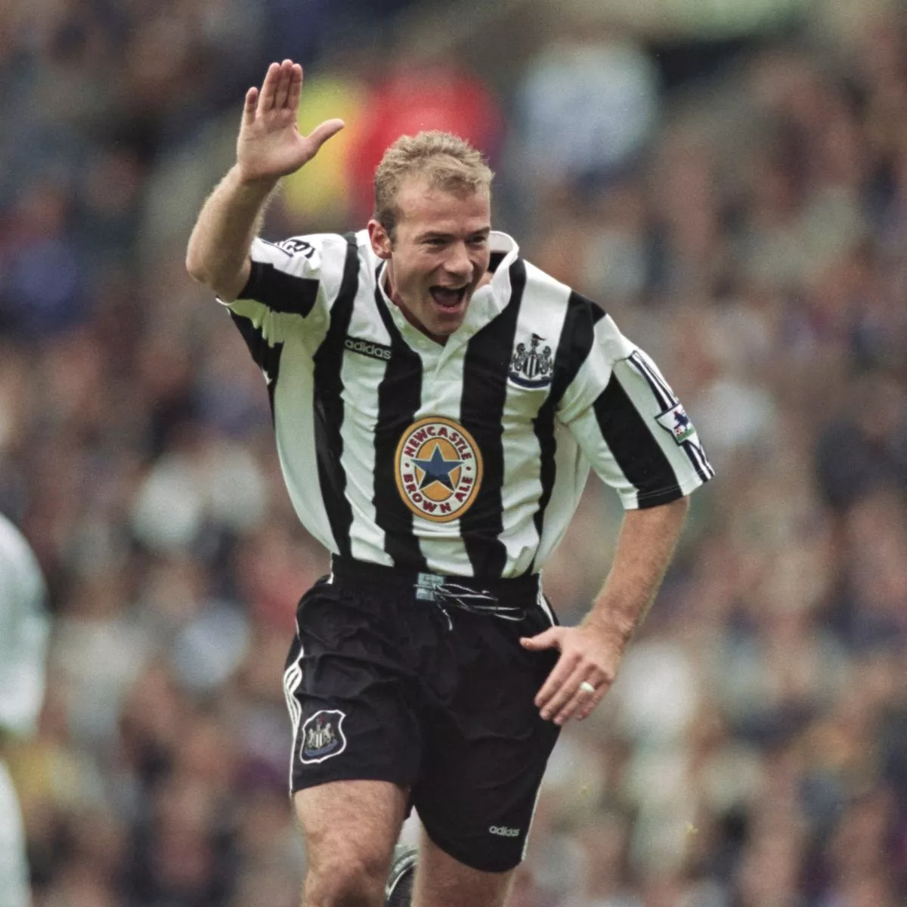

Cristiano Ronaldo je započeo svoj put u Premier ligi 2003. godine kada je potpisao za Manchester United. Tokom svog prvog perioda u klubu, osvojio je tri titule Premier lige i postao jedan od najboljih igrača na svetu. Nakon 12 godina, vratio se u Manchester United 2021. godine, gde je nastavio da impresionira golovima i igračkim veštinama. Njegov boravak u Premier ligi ostavio je trajan uticaj na navijače i fudbal u Engleskoj.
Erling Haaland je stigao u Premier ligu 2022. godine potpisavši za Manchester City. Već u svojoj prvoj sezoni oborio je rekord po broju postignutih golova u jednoj sezoni.
Thierry Henry se smatra jednim od najvećih igrača u istoriji Premier lige, naročito zbog svojih uspeha sa Arsenalom. Pridružio se Arsenalu 1999. godine i bio ključni dio "Nepobijedivih".
Alan Shearer je najbolji strijelac u historiji Premier lige sa 260 postignutih golova. Igrao je za Blackburn Rovers i Newcastle United, gde je postao legenda kluba i lige. Shearer je osvojio Premier ligu sa Blackburn Roversima 1995. godine i bio je poznat po svojoj snazi, udarcima i efikasnosti pred golom. Njegov rekord po broju golova ostaje netaknut i postavio je standard za sve napadače u Premier ligi.
Kevin De Bruyne, belgijski vezista, pridružio se Manchester Cityju 2015. godine i od tada se etablirao kao jedan od najboljih playmakera u ligi. Njegova preciznost u dodavanju, vizija i sposobnost stvaranja šansi učinile su ga ključnim igračem Cityja. De Bruyne je osvojio više titula Premier lige sa Manchester Cityjem, doprinosivši timu ne samo asistencijama već i golovima. Smatra se jednim od najboljih vezista u istoriji Premier lige.